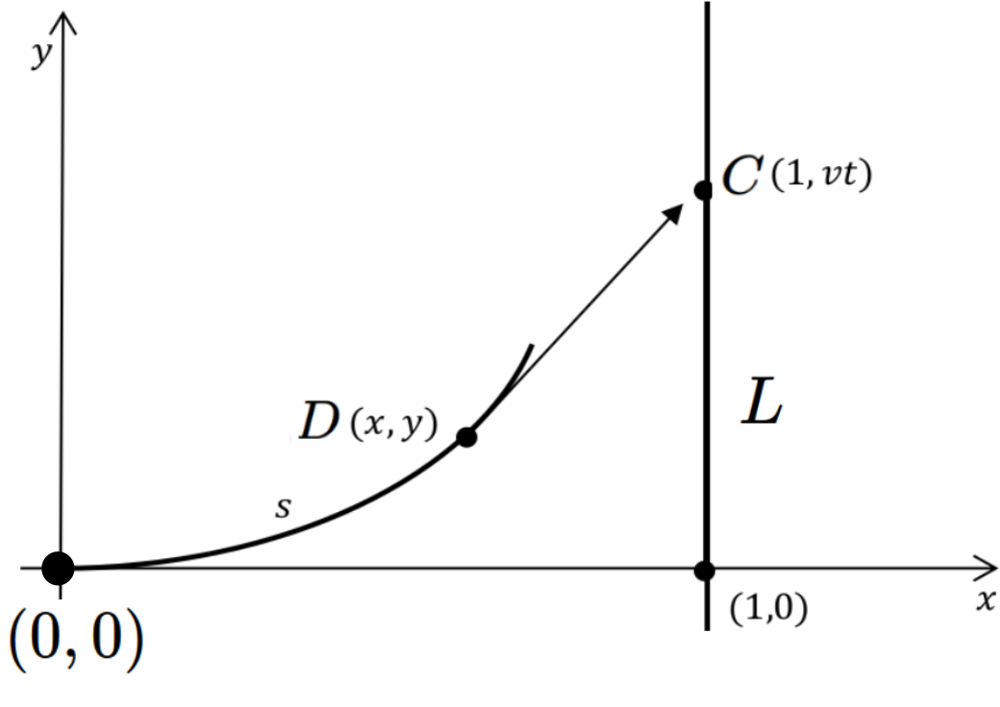
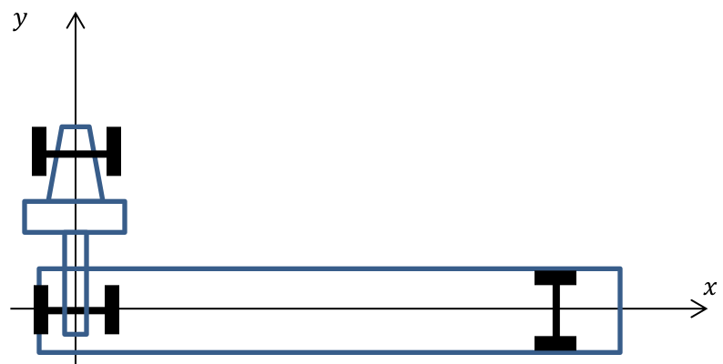

when we were trying to determine the solution to the catenary. We actually have the tools to solve this type of integral once we notice that (surprisingly!) we would like to use the substitution \(z=\tan{z}{}\text{.}\) As strange as it sounds to take a perfectly good integral and purposely insert trigonometry into it, this is just the ticket here. Since we have the trigonometric identity \(\tan^2(\theta)+1=\sec^2(\theta)\text{,}\) then this substitution is just the thing to rid us of the square root, which poses more of an issue than the trigonometry does.
Specifically, if we let \(z=\tan{\theta }\text{,}\) then \(\dx{\theta{}}=\sec^2(\theta)\dx{\theta}\text{,}\) and so we have
The trick now is to put things back in terms of \(z\text{.}\) We have \(\tan(\theta)=z\) , but what about \(\sec(\theta)\text{?}\) We could certainly use the trigonometric identity from before, but a more general way to do this is to draw a triangle. The beauty of this is that we don’t know what the angle \(\theta{}\) is, nor do we really care. All we need is that \(\tan(\theta)=\frac{z}{1}\text{.}\) This leads to the following triangle
Figure20.3.0.1.Diagram of a right triangle.
With this triangle, not only can we obtain the aforementioned \(\tan(\theta)=\frac{z}{1}\) and \(\sec(\theta)=\frac{\sqrt{1+z^2}}{1}\) which is what we need in the problem, but we could also obtain the following if we needed it:
We really urge you to do this (DRAW A TRIANGLE) instead of relying on memorizing trigonometric identities which actually are derived from the triangle. This gives us that the differential equation
Use the formula \(z=\dfdx{y}{x}\) for the catenary and \(z(0)=\dfdx{y}{x}{0}=0\) (this was the low point on the hanging chain) to show that \(c=0\) and so
which is the equation of the catenary as stated earlier.
Consider the top view of an airplane \(P\) starting at the point \((1,0)\) and traveling up the line \(x=1\) at a constant speed \(v\text{.}\) When the plane is at \((1,0)\text{,}\) a homing missile \(M\) is fired from the origin directly at the plane. Assuming that the missile travels at a speed which is \(k\) times the speed of the plane \((k>1)\) and is always aimed directly at the plane, find the path the missile takes. [Such a path is called a pursuit curve.] The diagram below shows the situation at time \(t\text{.}\)

Figure20.3.0.3.Image of a pursuit curve.
Problem20.3.0.4.
(a)
If we let \(s\) denote the distance the missile has traveled at time \(t\text{,}\) show that the missile’s path must satisfy the IVP
Obviously we can solve equation (20.18) for \(y\) but then we would have \(y\) in terms of \(x\text{,}\)\(s\text{,}\) and \(\dfdx{y}{x}\) which isn’t very helpful. The \(s\) term is particularly problematic since we know almost nothing about it.
But only almost. We do know that \(\dx{s}^2=\dx{x}^2+\dx{y}^2\text{.}\)
Differentiate equation (20.18) to show that the missile’s path must satisfy the differential equation
How far has the plane gone when the missile reaches it? What happens as \(x\rightarrow1\text{?}\)
Of course, the tangent function is not the only trigonometric function at our disposal.
Problem20.3.0.5.
The following is the view from above of a tractor-trailer. Initially, the center of the rear axle of the tractor is at the origin and the center of the rear axle of the trailer is at the point \((1,0)\text{.}\)

Figure20.3.0.6.Sketch of a tractor-trailer in the act of turning.
Suppose the tractor pulls the front wheels up the \(u\)-axis and that the rear wheels don’t slip.
(a)
show the path that the center of the rear axle of the trailer follows must satisfy the equations
After you separate the variables substitute \(x=\sin(\theta)\) in your integral.
(c)
Plot your solution on the \(x-y\) plane.
Problem20.3.0.7.
Again, having trigonometry involved was a better option than having the square root. Here, we utilized the trigonometric identity \(\sin^2(\theta)+\cos^2(\theta)=1\text{.}\) A surprising number of integrals involve terms such as \(\sqrt{1-x^2}\text{,}\)\(\sqrt{1+x^2}\) or \(\sqrt{x^2-1}\text{.}\) In these cases, it is often advantageous to utilize a trigonometric substitution, using the identities or to remove the square root, which typically is more a concern than the trigonometry. However, you should remember that there are other techniques at your disposal, so you need to be judicious about what you utilize. For example, consider the integral
Use the trigonometric substitution \(x=\tan(\theta)\) to compute the above integral.
(b)
Now use the non-trigonometric substitution \(x=1+x^2\) to compute the integral
(c)
Which method do you find more appealing? (Or least unappealing?)
Problem20.3.0.8.
This problems asks you to verify Integration Rules (18.15), (18.16), and (18.17), directly.
(a)
Use the substitution \(x=\sin(\theta)\) to compute \(\int\frac{1}{\sqrt{1-x^2}}\dx{x}\text{.}\)
(b)
Use the substitution \(x=\tan(\theta)\) to compute \(\int{\frac{1}{1+x^2}}\dx{x}\text{.}\)
(c)
Use the substitution \(x=\sec(\theta)\) to compute \(\int\frac{1}{x\sqrt{x^2-1}}\dx{x}\)
This is all well and good, but the forms \(\sqrt{1-x^2}\text{,}\)\(\sqrt{1+x^2}\text{,}\) and \(\sqrt{x^2-1}\) are all very specific. Can we use them for an integral like \(\int\frac{1}{\sqrt{4+x^2}}\dx{x} \text{?}\)
Of course we can. We just need to rearrange it using Algebra. Observe that if we had a \(1\) where the \(4\) is we’d be fine. We can’t just change it. That would change the entire integral. But if we factor out the \(4\) we get
Of course, now we have another problem. We have \(\left(\frac{x}{2}\right)^2\) where we were happy to have \(x^2\) before. But since we were going to substitute \(x\) away anyhow we’ll just substitute \(\frac{x}{2}\) away instead.
Letting \(\frac{x}{2}=\tan(\theta)\text{,}\) we proceed as before.
This integral appears to be a completely different from the others in this problem, but it really isn’t. Complete the square on \(x^2-6x\) and then use your result in part (c).
It should be clear from Problem 20.3.0.9 that as long as the expression inside the radical is a quadratic, we can manipulate it algebraically to produce something of the form \(\sqrt{1+\left(\frac{x-b}{a}\right)^2}\text{,}\)\(\sqrt{1-\left(\frac{x-b}{a}\right)^2}\)or \(\sqrt{\left(\frac{x-b}{a}\right)^2-1}\text{.}\) From there, we can use the appropriate trigonometric substitution.
Earlier we computed terminal velocity when considering linear drag. Now we will compare this to terminal velocity when the drag is proportional to the square of the velocity. An example of this would be a ball of mass \(M\) falling in air. (We can include buoyancy again, but it is typically negligible so we will discount it). Again, to model this, let\(y(t)\) be distance the ball has fallen (so the positive \(y\) axis is pointing downward), with \(y(0)=0\) representing the initial position of the ball. In a similar analysis to before, we denote the acceleration due to gravity by \(g\text{,}\) so the weight of the ball is \(Mg\text{.}\) The drag, which we assume is now quadratic, is proportional to the square of the velocity, so we will denote this by \(-Rv^2\text{,}\) where \(R\) is a constant and \(v=\dfdx{v}{t}\) is the velocity. For simplicity, we will assume \(v(0)=0\text{.}\)
Problem20.3.0.10.
(a)
Use Newton’s Third Law of Motion: (\(F\))\(=\)(\(M\))ass\(\cdot{}\)(\(A\))cceleration, to show that the velocity of the ball must satisfy the equations:
Compute \(\limit{t}{\infty}{v}\text{.}\) Compare this terminal velocity with our previous results.
The trigonometric substitutions we’ve dealt with so far have all involved square roots. What about this integral: \(\int\frac{\dx{x}}{(1-x^2)^\frac32}\text{?}\) Do you see that this is only slightly more complicated?
If we make the substitution \(x=\sin(\theta)\text{,}\) then \(\dx{x}=\cos(\theta)\) as before so,
This example underscores the need to be able to compute a variety of integrals involving trigonometric functions. Again, it is a trial and error kind of thing, but there are some standard tricks to learn. It is probably best to learn these tricks by looking at some specific examples, but as you do, focus on the technique being used and how it can be used on similar integrals, not the specific example.
Since sine is raised to an odd power, it makes sense to “save one of the sines” and convert everything else to cosine, utilizing the Pythagorean identity \(\sin^2(\theta)=1-\cos^2(\theta)\text{,}\) and then apply a substitution as follows. First we “save a sine.”
It’s just that it is not immediately clear how to continue from here. Most people will shy away from this because of the square root but in fact, this integral can be computed using techniques you already know.
First, the elementary substitution \(x=\sin(\theta)\) will give:
You see why we wouldn’t want to go this route, right? Recall that we introduced trigonometric substitutions precisely so we could handle integrals like this last one. It would seem to be counterproductive to take this path since we started with an integral involving trigonometric functions.
While our goal is to be able to work out integrals by the simplest possible method, not the most difficult, it can instructive to see that a computation can be done in more than one manner so we will pursue this just a bit farther.
Problem20.3.0.16.
Compute the integral \(\int x^3\sqrt{1-x^2}\dx{x}\) using these substitutions:
(a)
\(x=\sin(\theta)\)
(b)
\(u=1-x^2\)
Finish example 20.3.0.13 using each of the substitutions above. Do you get the same solution as before?
Problem20.3.0.17.
Compute the integral \(\int\sin^3(\theta)\cos^3(\theta)\dx{\theta}\) by:
(a)
Saving one of the cosines and converting everthing else into sines.
(b)
Saving one of the sines and converting everthing else into cosines.
(c)
Do you get the same result in parts (a) and (b)? Explain.
Example20.3.0.18.
What happens if you don’t have an odd power of sine or cosine? For example, suppose you have \(\int\sin^2(\theta)\cos^2(\theta)\dx{\theta}\text{.}\)
Saving a sine or cosine would lead to an integrand with a square root, which we are trying to avoid, if we can help it. In this case, there are a couple of trigonometric identities that can help. They the Half-Angle formlas:
\begin{equation*}
\sin^2(\theta) = \frac12\left(1-\cos(2\theta)\right) \text{
and } \cos^2(\theta)=\frac12\left(1+\cos(2\theta)\right)\text{.}
\end{equation*}
Using these identities in our integral we see that
Show that we get the same result if we use the Double Angle formula: \(\sin(2\theta)=2\sin(\theta)\cos(\theta)\text{.}\)
Example20.3.0.20.
\(\int\sec^4(\theta)\tan^2(\theta)\dx{\theta}\)
In this example, we can save a \(\sec^2(\theta)\) as part of the differential and use the identity \(\sec^2(\theta)=1+\tan^2(\theta)\) to change everything else into an expression in tangent. Since the secant is to an even power this again avoids square roots, which is the general idea.
If tangent occurs to an odd power, we can save a tangent and a secant as part of the differential and use the same identity to convert everything else to secant.
Compute this integral by saving a \(\sec^2(\theta)\) and converting the rest into an expression in tangent.
(b)
Compute this integral by saving a \(\sec(\theta)\tan(\theta)\) and converting the rest into an expression in secant.
(c)
Verify the at you get the same result in (a) and (b).
Problem20.3.0.23.
Previously we computed \(\int \tan(\theta)\dx{\theta}\) using the identity \(\tan(\theta)=\frac{\cos(\theta)}{\sin(\theta)}\text{.}\) We could also use the identity \(\tan(\theta)=\frac{\sec(\theta)\tan(\theta)}{\sec(\theta)}\dx{\theta}\text{.}\)
Do we get a different answer? Explain.
The same tricks we applied with secant and tangent would apply equally well to integrals involving cosecant and cotangent using the identity \(\csc^2(\theta)=1+\cot^2(\theta)\text{.}\) Of course, we have not covered every type of integral that can occur and you can always find integrals that will take other tricks. We’ve only provided some basics that you can build on as you gain experience. So practice, practice, practice!